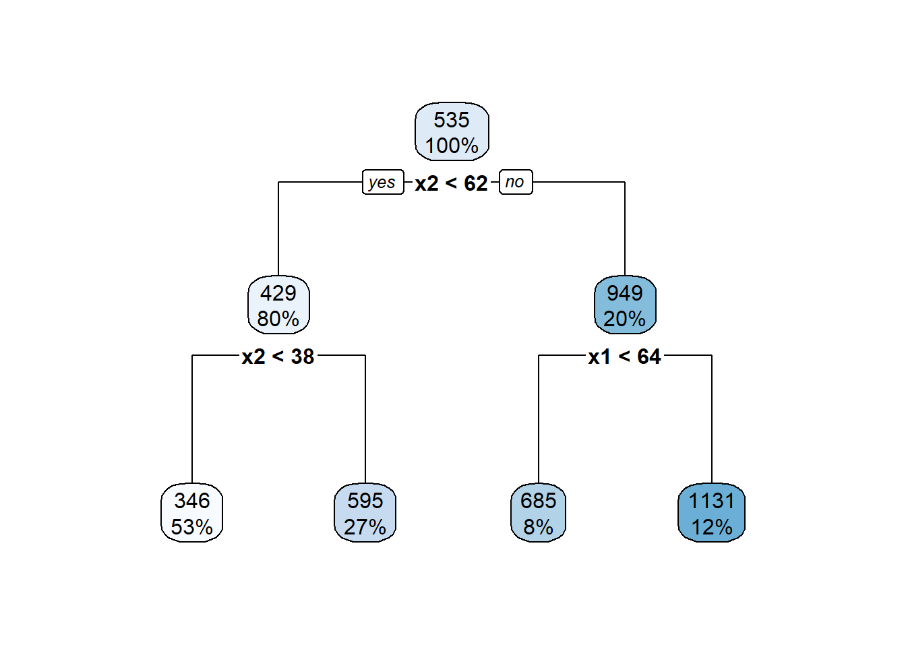
6 Regressão por árvores de decisão e floresta aleatória
6.1 Árvores de decisão para regressão
As árvores de decisão foram inicialmente propostas para problemas de classificação, porém, podem ser adaptadas de forma simples para problemas de regressão. Na regressão por árvores de decisão, ou simplesmente por árvores de regressão, divide-se o espaço preditor em várias regiões hiper-retangulares tomando como predição a média ou outra medida simples das observações de treino da região. O conjunto de regras de divisão usado para segmentar o espaço preditor pode ser resumido em um diagrama semelhante a uma árvore, conforme a Figura 6.1. A árvore plotada apresenta quatro nós terminais ou folhas e profundidade igual a 2, isto é, a partir do nó raiz são necessários no máximo 2 partições para atingir qualquer folha.
O gráfico de superfície da Figura 6.2 expõe o modelo obtido em função das duas variáveis preditoras, podendo-se observar que o valor previsto é constante em cada região retangular correspondente ao diagrama ilustrado anteriormente.
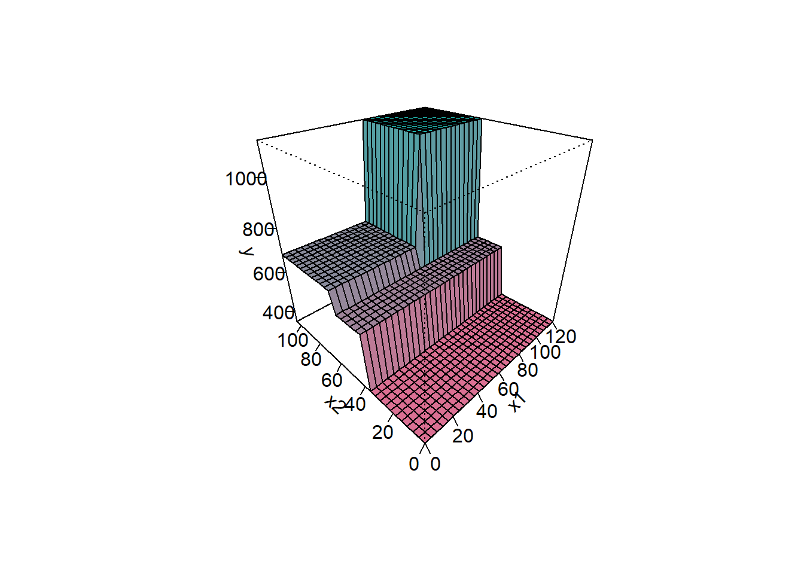
Pode-se observar o mesmo modelo de árvore de regressão via gráfico de contorno, conforme Figura 6.3, ficando mais clara a divisão do espaço preditor.
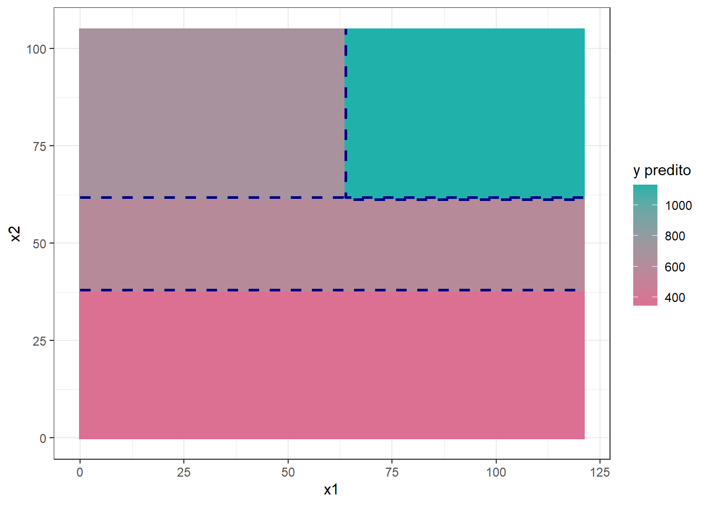
Sejam \(K\) preditores, \(\mathbf{x} = [x_{1}, x_{2},..., x_{K}]^T\), uma resposta, \(y \in \mathbb{R}\) , e \(n\) observações de treino, \(\mathcal{D}=(\mathbf{x}_1,y_1), (\mathbf{x}_2,y_2),..., (\mathbf{x}_n,y_n)\). O algoritmo (Classification and Regression Trees - CART) para regressão define, a cada iteração, a variável preditora e o seu nível para dividir o espaço dos preditores. Considerando \(J\) regiões \(R_1, R_2, ..., R_J\), o valor predito será uma constante \(\gamma_j\), em cada região, \(j=1,...,J\). Portanto, o modelo de árvore de regressão pode ser definido conforme a Equação 6.1, \(\{R_j,\gamma_j\}, j=1,\ldots,J\), onde \(I(\mathbf{x} \in R_j)\) é uma função indicativa que recebe 1 se \(\mathbf{x}\) pertence à região \(R_j\) e 0 caso contrário. O melhor \(\gamma_j\) para minimizar a soma dos quadrados dos erros é a média das observações na região, \(\hat{\gamma}_j = (\bar{y}_i | \mathbf{x}_i \in R_j)\).
\[ \begin{aligned} f(\mathbf{x}) = T(\mathbf{x},R_j,\gamma_j) = \sum_{j=1}^J \gamma_jI(\mathbf{x} \in R_j) \end{aligned} \tag{6.1}\]
Considerando todos os dados de treinamento, as divisões são definidas tomando uma variável para divisão, \(x_k\), \(k = 1,..., K\), e um ponto de divisão \(x_k = s\), \(R_1(k,s) = \{\mathbf{x}|x_k \leq s\}\) e \(R_2(k,s) = \{\mathbf{x}|x_k>s\}\). Portanto, o algoritmo CART busca o preditor para a divisão e o valor deste na divisão resolvendo a Equação 6.2, ou seja, minimizando a soma dos quadrados dos erros de previsão nas regiões obtidas a partir da escolha de \(x_k\) e seu valor \(s\).
\[ \begin{aligned} \min_{k,s} \Bigl[ \min_{\gamma_1} \sum_{x_i \in R_1(k,s)} (y_i - \gamma_1)^2 + \min_{\gamma_2} \sum_{x_i \in R_2(k,s)} (y_i - \gamma_2)^2 \Bigr] \end{aligned} \tag{6.2}\]
Importante
O algoritmo CART repete o particionamento recursivamente até um determinado critério de parada ser alcançado, por exemplo, até um número mínimo de observações em cada partição ser atingido ou até uma profundidade máxima da árvore.
Seja um conjunto de dados de preço de venda de apartamentos em algumas cidades pertencentes às regiões de Alto Paraopeba, Zona da Mata e Campos das Vertentes do estado de Minas Gerais. Os dados contém 632 observações constando a cidade, o bairro, a área, número de quartos, número de banheiros, número de salas, número de vagas na garagem, presença de varanda, área gourmet, terraço, copa e de piscina. Algumas linhas são aleatoriamente exibidas na Tabela 6.1.
| Cidade | Bairro | Area | Valor | Quartos | Banheiros | Vaga | Varanda | Suite | Area.Gourmet | Terraco | Sala | Copa | Piscina |
|---|---|---|---|---|---|---|---|---|---|---|---|---|---|
| Congonhas | Joaquim Murtinho | 120.00 | 200000 | 3 | 1 | 2 | N | 0 | N | N | 1 | N | N |
| Juiz de Fora | Sao Pedro | 45.00 | 229900 | 2 | 1 | 1 | N | 0 | N | N | 1 | N | N |
| Conselheiro Lafaiete | Campo Alegre | 260.00 | 1500000 | 3 | 4 | 3 | S | 1 | S | S | 2 | S | N |
| Juiz de Fora | Sao Mateus | 87.00 | 230000 | 2 | 1 | 1 | N | 0 | N | N | 1 | N | N |
| Lavras | Centenario | 180.00 | 880000 | 3 | 4 | 3 | S | 2 | S | S | 2 | N | S |
| Barbacena | Centro | 89.00 | 399000 | 2 | 2 | 1 | S | 1 | N | N | 1 | N | N |
| Congonhas | Alto Maranhao | 300.00 | 495000 | 2 | 1 | 3 | N | 0 | N | N | 1 | N | N |
| Congonhas | Centro | 102.00 | 190000 | 3 | 1 | 1 | N | 1 | N | N | 1 | S | N |
| Sao Joao del Rei | Vila Belizario | 98.64 | 550000 | 3 | 2 | 2 | N | 1 | N | N | 1 | N | N |
| Conselheiro Lafaiete | Santa Matilde | 120.00 | 300000 | 2 | 1 | 1 | N | 0 | N | S | 1 | N | N |
A perda na Equação 6.2 consiste na perda em cada partição gerada no algoritmo CART. A Equação 6.3 expõe a função perda geral a ser minimizada, onde \(J\) é o número de nós terminais ou regiões finais do modelo, e o termo \(\alpha J\) consiste em uma penalização que controla o crescimento da árvore, sendo comumente chamado de termo de poda. O parâmetro \(\alpha\) é chamado de complexidade de custo e controla a intensidade dessa penalização.
\[ \begin{aligned} \min_{T} \sum_{j=1}^{J} \sum_{x_i \in R_j} (y_i - \gamma_{j})^2 + \alpha J \end{aligned} \tag{6.3}\]
Importante
Os hiperparâmetros a serem otimizados em modelos de árvore de regressão/decisão são a complexidade de custo, \(\alpha\), o número máximo de nós terminais ou folhas, \(J\), e o número mínimo de observações por partição (min_n).
Pode-se realizar uma validação cruzada para otimizar os hiperparâmetros do modelo de árvore de regressão, isto é, definir a profundidade da árvore e a complexidade de custo, \(\alpha\), ideais para os dados em análise e evitar o sobreajuste. A Figura 6.4 plota o erro em relação a profundidade e a complexidade da árvore. Neste caso, foi considerado min_n = 20. Observa-se que um modelo com profundidade igual a 4 e um valor de complexidade de custo de baixo a intermediário minimiza o erro de teste, isto é, minimiza RMSE ou maximiza \(R^2\).
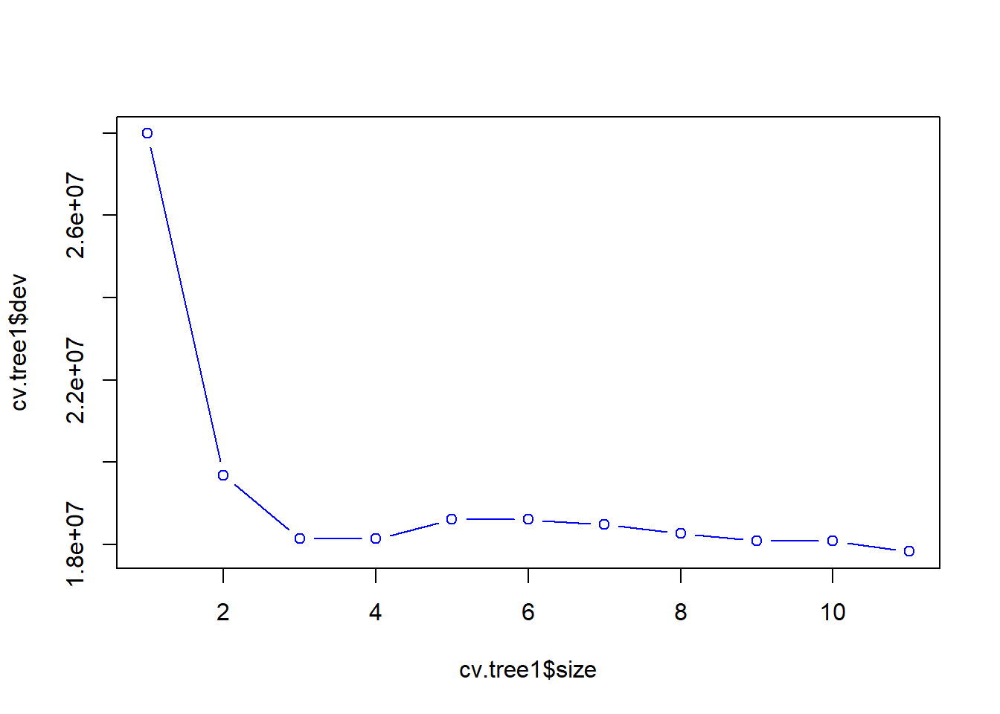
A seguir, detalha-se o modelo de árvore de decisão obtido. O termo deviance consiste na soma do quadrados dos erros de previsão após cada partição, enquanto yval consiste no valor predito em cada região, \(\hat y\). Os nós terminais ou folhas são marcados com *. O modelo é baseado em regras se/então. Por exemplo, se Area< 81.2 & Banheiros< 1.5, então o preço estimado do apartamento é \(\hat y = R\$ 217803,1\).
n= 379
node), split, n, deviance, yval
* denotes terminal node
1) root 379 4.355547e+13 466892.5
2) Area< 139.5 263 6.370876e+12 336852.8
4) Area< 81.2 130 1.109841e+12 253479.1
8) Banheiros< 1.5 89 4.015501e+11 217803.1
16) Area< 71 69 2.449756e+11 200949.0 *
17) Area>=71 20 6.935295e+10 275950.0 *
9) Banheiros>=1.5 41 3.491204e+11 330922.0
18) Cidade_Uba>=0.5 11 5.590455e+10 278636.4 *
19) Cidade_Uba< 0.5 30 2.521178e+11 350093.5 *
5) Area>=81.2 133 3.474113e+12 418345.9
10) Vaga< 1.5 86 1.555180e+12 372081.4
20) Area< 124 71 1.031850e+12 352549.3 *
21) Area>=124 15 3.680337e+11 464533.3 *
11) Vaga>=1.5 47 1.398040e+12 503000.0
22) Area< 95.5 14 4.051172e+11 418357.1 *
23) Area>=95.5 33 8.500691e+11 538909.1 *
3) Area>=139.5 116 2.265383e+13 761723.8
6) Vaga< 1.5 39 2.547188e+12 482179.5
12) Bairro_other>=0.5 31 8.509448e+11 399677.4
24) Area.Gourmet_S< 0.5 22 3.502219e+11 354772.7 *
25) Area.Gourmet_S>=0.5 9 3.479222e+11 509444.4 *
13) Bairro_other< 0.5 8 6.675969e+11 801875.0 *
7) Vaga>=1.5 77 1.551536e+13 903311.2
14) Cidade_Juiz.de.Fora< 0.5 58 5.733488e+12 774001.0
28) Varanda_S< 0.5 19 1.009103e+12 561578.9 *
29) Varanda_S>=0.5 39 3.449368e+12 877488.7 *
15) Cidade_Juiz.de.Fora>=0.5 19 5.851535e+12 1298047.0 *A Figura 6.5 apresenta o diagrama do modelo de árvore de regressão para prever o preço de venda de apartamentos. O modelo resume as regras expostas acima. As variáveis categóricas foram codificadas em binárias. Por exemplo, Cidade_Uba >= 0,5 implica que a cidade é Ubá se 1 e não é Ubá se 0.
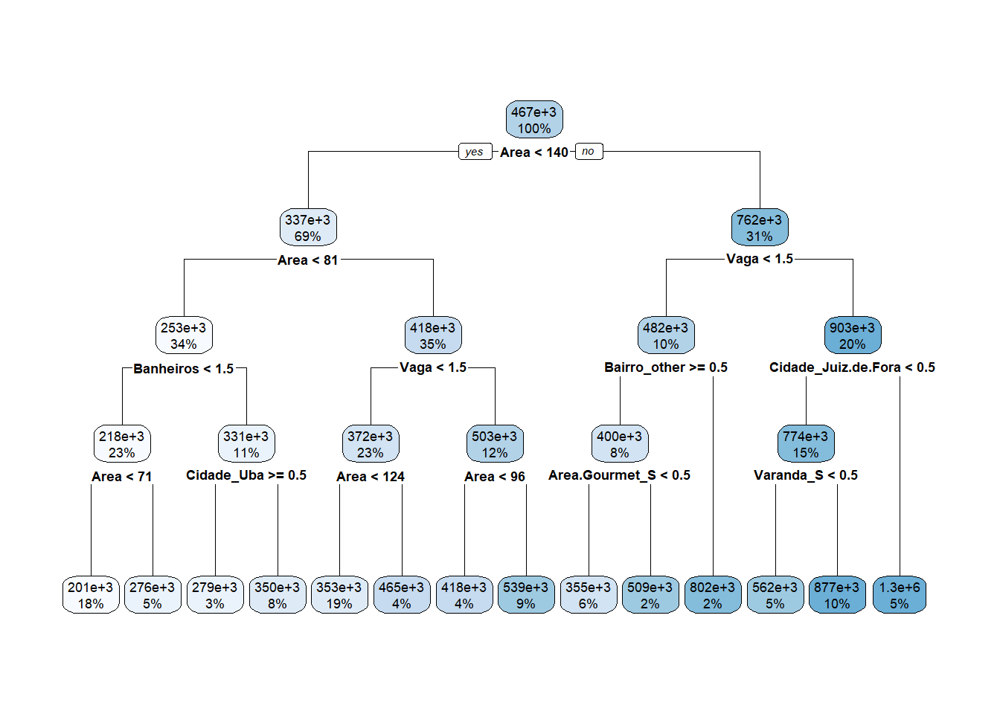
6.1.1 Importância dos preditores
Os modelos de árvore de decisão e regressão são simples de interpretar, pois apresentam uma relação direta entre o espaço de decisão particionado e as previsões. As variáveis mais importantes neste tipo de modelo podem ser ranqueadas considerando a redução no erro quadrático de um nó pai para os filhos, segundo a Equação 6.4, onde \(SS_E\) consiste na soma dos quadrados dos erros.
\[ \text{Importância}(x_j) = \sum_{\text{splits com } x_j} \left(SS_{E_{\text{pai}}} - SS_{E_{\text{filho esq.}}} - SS_{E_{\text{filho dir.}}}\right) \tag{6.4}\]
A Figura 6.6 apresenta um gráfico de importância de variável, comumente chamado de Variance Importance Plot (VIP). Observa-se que a área do apartamento é o preditor mais importante no preço, seguido do número de vagas na garagem, número de banheiros, suites, etc. Sugere-se o estudo de outros modelos de árvore de decisão com número reduzido de variáveis, de forma a avaliar se é possível obter um modelo mais simples com menor erro.
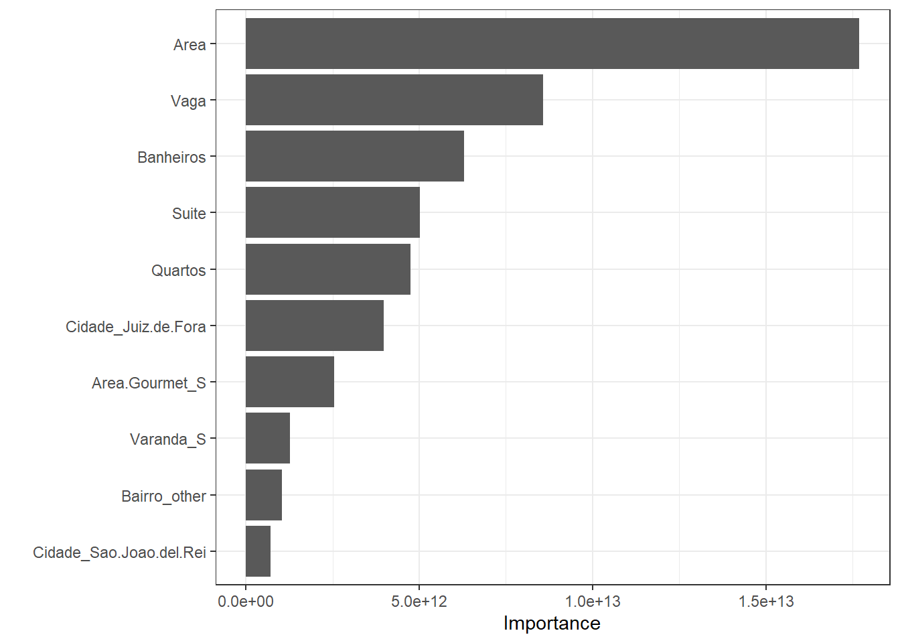
6.2 Bagged trees ou bagging
Bagged trees ou bagging ou, em português, poderia ser traduzido de forma livre como “árvores ensacadas” e consiste em um método baseado em árvores de decisão que pode ser aplicado tanto em regressão quanto em classificação. O método agrega várias árvores de decisão as quais são estimadas a partir de reamostragem por reposição dos dados de treino. Ou seja, antes de estimar cada árvore, realiza-se um sorteio com reposição dos dados de treino, procedimento este chamado de bootstrap e, posteriormente, estima-se a árvore para cada amostra obtida por sorteio com reposição. O modelo final é a média de todas as árvores obtidas após bootstrap dos dados. Geralmente, um número alto de reamostragens é realizado e, portanto, um número alto de árvores é obtido, resultando em um modelo com maior flexibilidade, porém mais difícil de interpretar. O nome BAgging também vem de bootstrap aggregated ou agregação por bootstrap.
Definição
Bootstrap é uma técnica estatística de reamostragem por reposição, usada para inferência, simulação e estimativas. Por exemplo, seja um conjunto de dados de treino \(\mathcal{D}_{treino} = \{(\mathbf{x}_1,y_1), (\mathbf{x}_2,y_2),..., (\mathbf{x}_n,y_n)\}\), com \(n=7\) observações. Uma amostra bootstrap pode resultar no seguinte conjunto de dados \(\mathcal{D^*} = (\mathbf{x}_5,y_5), (\mathbf{x}_7,y_7), (\mathbf{x}_5,y_5),\) \((\mathbf{x}_4,y_4), (\mathbf{x}_7,y_7), (\mathbf{x}_3,y_3), (\mathbf{x}_1,y_1)\). Pode-se demonstrar que, para um \(n\) suficientemente grande, no bootstrap, a probabilidade de uma observação ser sorteada ao menos uma vez é igual a \(1-e^{-1} = 0,632\).
Considere um conjunto de dados de treino com \(n = 10\) observações, com três preditores e uma variável independente, exibido integralmente na Tabela 6.2. Cada linha é exibida com uma cor distinta para facilitar a distinção entre estas e entendimento do método bootstrap.
| i | x1 | x2 | x3 | y |
|---|---|---|---|---|
| 1 | -0.08 | 1.24 | 4.28 | 6.74 |
| 2 | 0.84 | 2.29 | 2.99 | 7.32 |
| 3 | -0.46 | 2.42 | 2.60 | 5.25 |
| 4 | -0.55 | 0.71 | 3.02 | 4.02 |
| 5 | 0.74 | 2.07 | 4.74 | 8.80 |
| 6 | -0.11 | 1.19 | 1.89 | 4.06 |
| 7 | -0.17 | 3.51 | 1.94 | 6.45 |
| 8 | -1.09 | 1.73 | 4.95 | 6.45 |
| 9 | -3.01 | 3.56 | 3.60 | 5.14 |
| 10 | -0.59 | 1.76 | 0.98 | 3.24 |
Um bootstrap deste conjunto de dados pode resultar na reamostragem exibida na Tabela 6.3. Pode-se observar que, neste caso, as observações 2, 4, 5, 6, 9 e 10 foram sorteadas, sendo as observações 4, 5, 6 e 9 sorteadas duas vezes, enquanto as observações 1, 3, 7 e 8 não foram sorteadas.
| i | x1 | x2 | x3 | y |
|---|---|---|---|---|
| 9 | -3.01 | 3.56 | 3.60 | 5.14 |
| 6 | -0.11 | 1.19 | 1.89 | 4.06 |
| 10 | -0.59 | 1.76 | 0.98 | 3.24 |
| 9 | -3.01 | 3.56 | 3.60 | 5.14 |
| 4 | -0.55 | 0.71 | 3.02 | 4.02 |
| 5 | 0.74 | 2.07 | 4.74 | 8.80 |
| 4 | -0.55 | 0.71 | 3.02 | 4.02 |
| 5 | 0.74 | 2.07 | 4.74 | 8.80 |
| 6 | -0.11 | 1.19 | 1.89 | 4.06 |
| 2 | 0.84 | 2.29 | 2.99 | 7.32 |
A Figura 6.7 exibe o diagrama de uma árvore de decisão para a amostra obtida via bootstrap. O bagging repete este processo diversas vezes, reamostrando os dados por bootstrap e estimando para cada “nova” amostra uma nova árvore. Ao final é tomada como predição a média de todas as árvores.
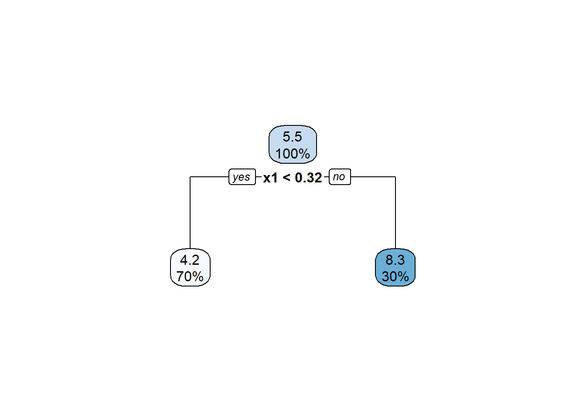
Para o mesmo conjunto de dados, sejam \(B=6\) árvores obtidas após reamostragens via bootstrap apresentadas na Figura 6.8. As árvores diferem entre si, pois cada reamostragem produz um conjunto de treino distinto — com repetições e ausências de observações originais — sendo a probabilidade de dois bootstraps coincidirem decrescente com \(n\).
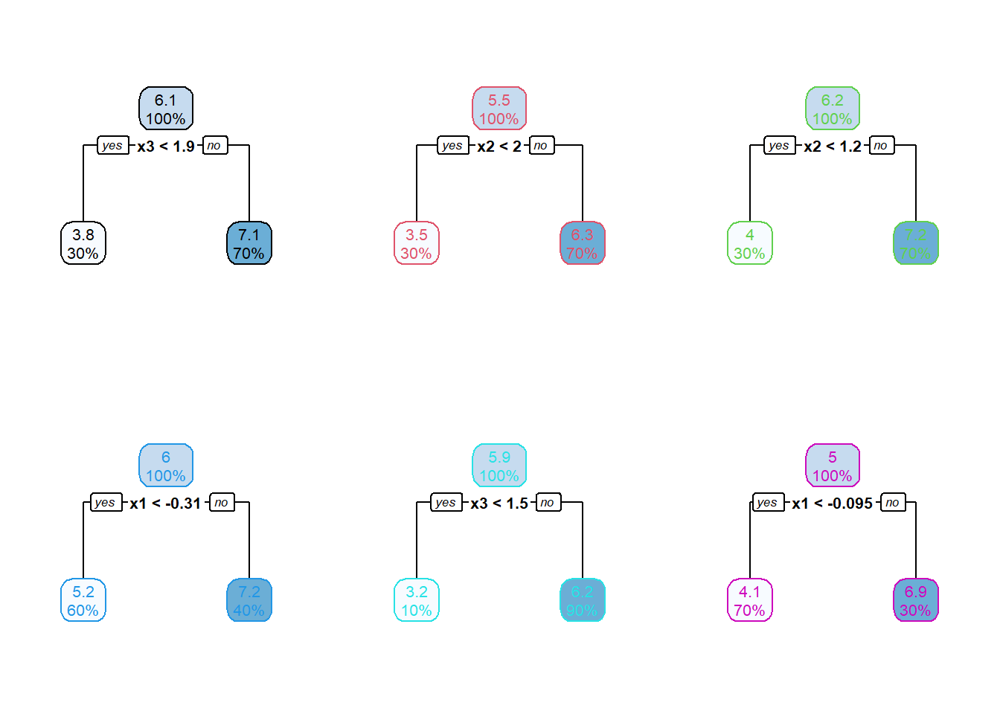
Seja uma observação futura arbitrária com \(x_1=-1,11\), \(x_2=1,73\) e \(x_3=1,92\). Considerando as 6 árvores obtidas anteriormente, as previsões destas para esta observação são: 7,10, 3,51, 7,16, 7,18, 6,24 e 4,14. O modelo bagging retorna como resultado a média das previsões das árvores, conforme Equação 6.5, onde \(B\) consiste no número de árvores obtidas após bootstrap dos dados e \(T_b\) consiste na \(b\)-ésima árvore, \(b=1,...,B\). Logo, \(\hat{y} = \frac{1}{6}\sum_{b=1}^6 T_b(\mathbf{x}_0)\) = \((7,10+3,51+7,16+7,18+6,24+4,14)/6 = 5,89\).
\[ \hat{y} = \frac{1}{B}\sum_{b=1}^B T_b(\mathbf{x}) \tag{6.5}\]
Importante
Os hiperparâmetros do método bagging são a complexidade de custo, \(\alpha\), a profundidade da árvore, o número mínimo de observações por partição (min_n) e o número de bootstraps/árvores estimadas.
Seja novamente o caso de previsão do preço de apartamentos. A Figura 6.9 plota o RMSE em função dos hiperparâmetros na validação cruzada do modelo de regressão via bagging para prever o preço de apartamentos. Os níveis destes que minimizam RMSE são \(\alpha = 5,62 \times 10^{-4}\), profundidade da árvore igual a 8 e número mínimo de observações por partição min_n=11. Foram considerados 50 bootstraps e, logo, 50 árvores.
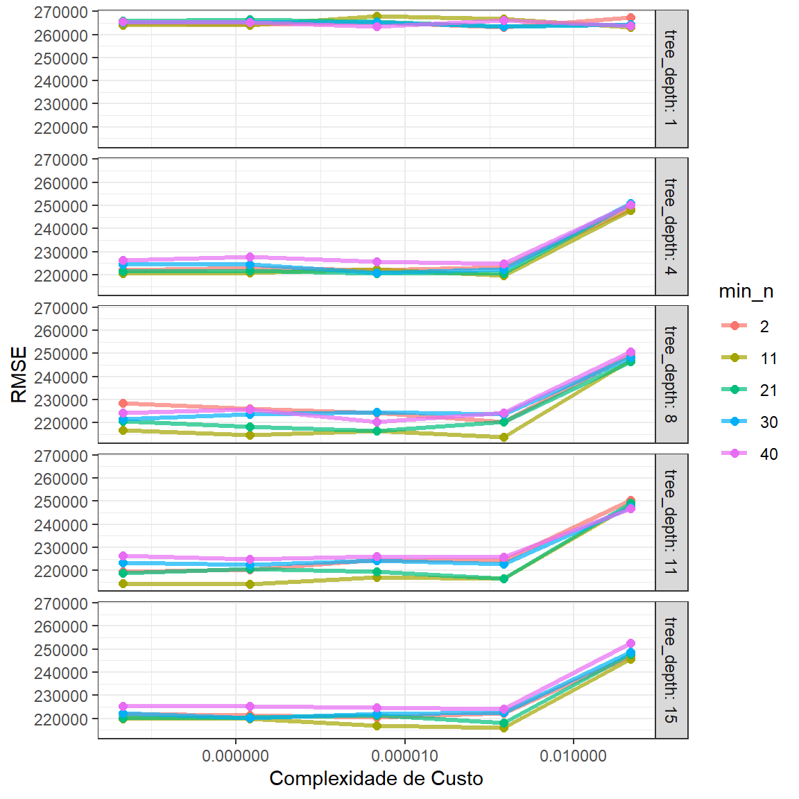
6.2.1 Importância dos preditores
A Figura 6.10 apresenta um gráfico de importância de variáveis do modelo bagging para prever o preço de apartamentos. Neste caso, o método de cálculo de importância das variáveis é a permutação. Observa-se que as variáveis mais importantes no preço são Area, Vaga, Cidade, etc. A linha vertical de referência consiste no RMSE de referência para o modelo sem permutação das variáveis. As variáveis com box-plot à direita da linha são aquelas que melhoram o ajuste do modelo.
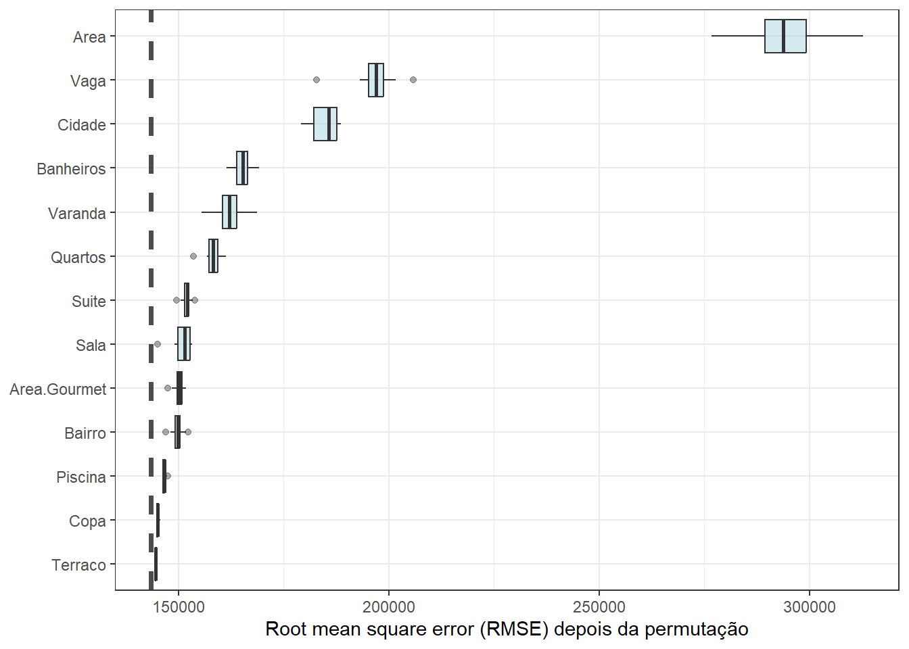
Definição
A permutação é um método de medição da importância dos preditores a partir do embaralhamento dos valores destes, de forma a avaliar a perda ou ajuste em relação às previsões sem o embaralhamento. Espera-se que, para um preditor importante, o embaralhamento piore o ajuste do modelo.
A Figura 6.11 expõe um gráfico de efeitos, também dito gráfico de dependência parcial, do modelo de regressão obtido via bagging para prever o valor do apartamento em função da área e do número de vagas para carros na garagem. Os outros preditores foram fixados em Quartos = 3, Banheiros = 2, Varanda = "N", Suite = 1, Sala = 1, Copa = "N" e Piscina = "N". Observa-se aumento do preço em função da área e número de vagas. Juiz de Fora é a cidade com maiores preços. Tal gráfico pode ser realizado para outras variáveis do modelo.
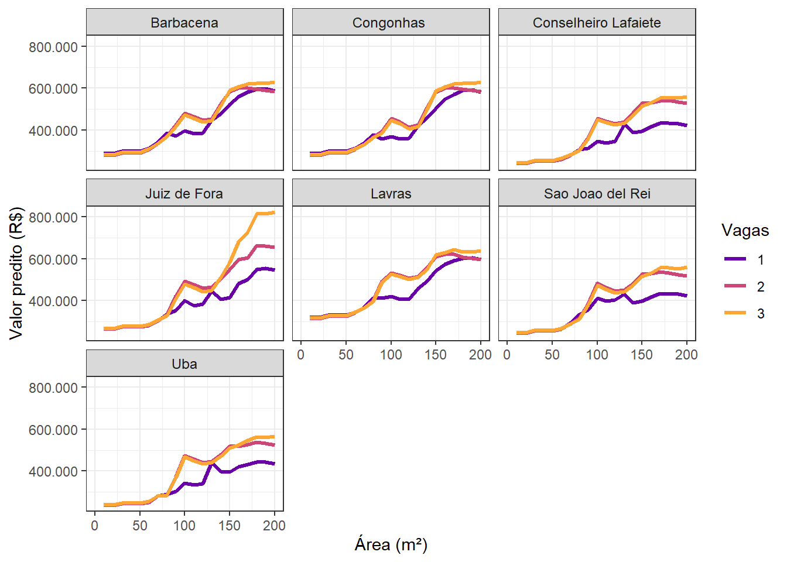
6.3 Floresta aleatória
O modelo de floresta aleatória consiste em uma evolução do modelo bagging com a finalidade de diminuir a variância deste. Basicamente, em casos onde há multicolinearidade, isto é, correlação entre os múltiplos preditores, o bagging pode acarretar na seleção de apenas alguns dos preditores disponíveis durante o particionamento binário recursivo, os quais apresentam efeito maior e dominariam este processo. Neste caso, as árvores geradas considerando a reamostragem das observações de treino apresentariam alta correlação entre si, acarretando em alta variabilidade das previsões finais. No modelo de floresta aleatória, antes de cada partição, são selecionadas aleatoriamente \(m\) variáveis regressoras, \(m<K\), às quais são consideradas no processo de particionamento binário. Geralmente, para regressão recomenda-se \(m=K/3\). Entretanto, este parâmetro pode ser melhor definido via validação cruzada.
Importante
Os hiperparâmetros do método floresta aleatória são o número de bootstraps/árvores, o número de preditores sorteados e considerados em cada particionamento binário recursivo, m (mtry) e o número mínimo de observações por partição (min_n).
A Figura 6.12 plota o RMSE em função dos hiperparâmetros na validação cruzada do modelo de regressão via bagging para prever o preço de apartamentos. Os níveis que minimizam RMSE são \(m = 4\), 1000 árvores e min_n=2.
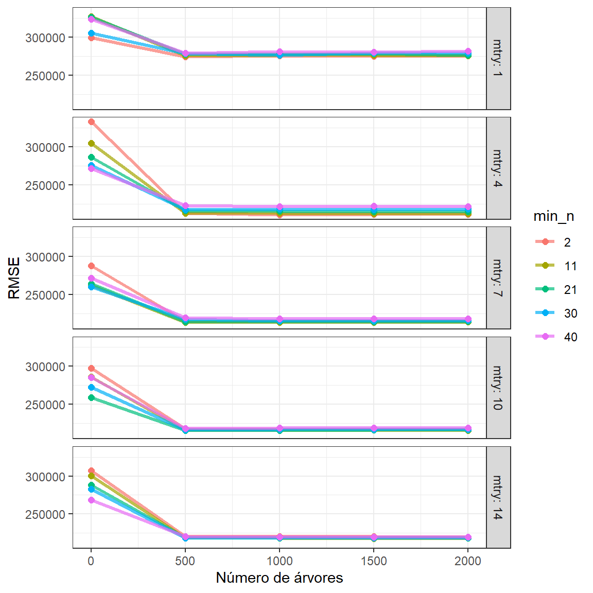
6.3.1 Importância dos preditores
A Figura 6.13 expõe o gráfico de importância das variáveis por permutação do modelo de floresta aleatória para prever o preço de apartamentos. As primeiras variáveis mais importantes coincidem com as do modelo obtido via bagging. Sugere-se ao leitor comparar ambos resultados e verificar as diferenças na ordem de importância das variáveis.
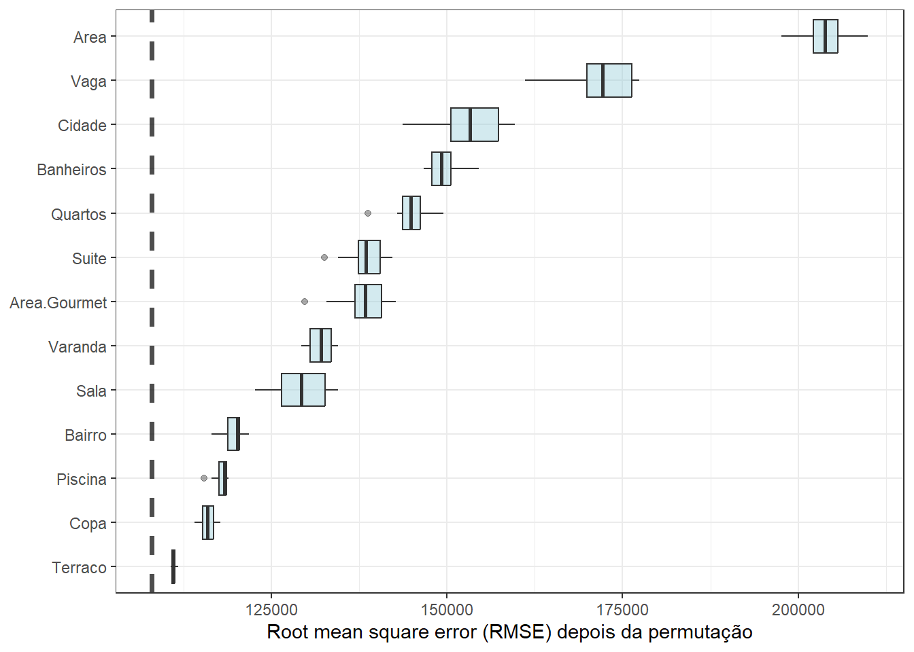
A Figura 6.14 apresenta um gráfico de dependência parcial do modelo de floresta aleatória considerando a área e número de vagas na garagem para as cidades consideradas.
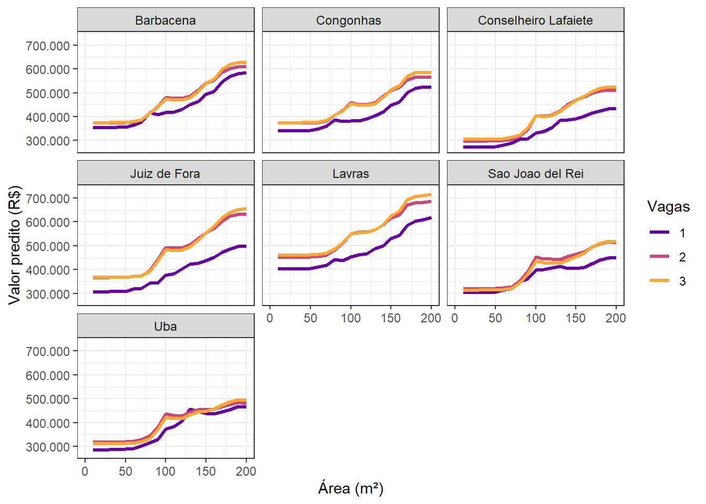
6.4 Implementações em R
A seguir serão expostas as implementações necessárias para obter os resultados do capítulo.
6.4.1 Árvores para regressão
Carregando pacotes.
library(tidymodels)
library(sjdatar)
library(ggplot2)
library(dplyr)
library(rpart.plot)
library(vip)Carregando base de dados de preços de apartamentos em cidades de Minas Gerais.
data(apartamentos2024mg)
dados <- apartamentos2024mg
dados |> head()Sorteando observações de treino.
set.seed(36)
dados_split <- initial_split(dados, prop = 0.60)
# dados_split
dados_treino <- training(dados_split)
dados_teste <- testing(dados_split)Definindo a receita. A especificação step_unknown cria a categoria “unknown” para valores NA (desconhecidos) de um preditores categóricos. Por exemplo, pode-se observar que nos dados de treino a décima observação não apresenta o bairro. Já a especificação step_other une categorias infrequentes em uma categoria chamada de “other”, podendo-se definir a proporção de observações de corte com o argumento threshold, sendo 0,05 o default. O preditor Bairro apresenta muitas categorias, possivelmente com baixa frequência, sendo interessante neste caso o uso de tal especificação.
receita <- recipe(formula = Valor ~ .,
data = dados_treino) |>
step_unknown(all_nominal_predictors()) |>
step_other(all_nominal_predictors()) |>
step_dummy(all_nominal_predictors())
receita |>
prep() |>
bake(dados_treino)
Importante
Nos modelos baseados em árvores não é necessário a normalização dos preditores, uma vez que o processo de particionamento binário recursivo é invariante a escala.
Definindo o método. Para árvore de decisão/regressão usa-se decision_tree e sugere-se o pacote rpart. Nos métodos que podem ser aplicados tanto a regressão quanto a classificação é importante definir o seu objetivo via set_mode.
tree_model <-
decision_tree(cost_complexity = tune(),
tree_depth = tune()) |>
set_engine("rpart") |>
set_mode("regression")Definindo o grid para estimar os hiperparâmetros via grid_regular, com 5 níveis para cada hiperparâmetro. O particionamento dos dados é realizado via vfold_cv, para validação cruzada e grid search. Em seguida, define-se o workflow e, por fim, realiza-se a otimização de hiperparâmetros via tune_grid.
tree_grid <- grid_regular(cost_complexity(),
tree_depth(),
levels = 5)
set.seed(234)
cell_folds <- vfold_cv(dados_treino,
v = 5)
set.seed(345)
tree_wf <- workflow() |>
add_recipe(receita) |>
add_model(tree_model)
tree_res <-
tree_wf |>
tune_grid(
resamples = cell_folds,
grid = tree_grid
)Coletando métricas de ajuste na validação cruzada via collect_metrics, filtrando e ordenando por RMSE.
tree_res |>
collect_metrics() |>
filter(.metric == "rmse") |>
arrange(mean)Para a métrica \(R^2\) deve-se ordenar de forma ascendente.
tree_res |>
collect_metrics() |>
filter(.metric == "rsq") |>
arrange(desc(mean))Plotando o ajuste na validação cruzada em função dos hiperparâmetros.
tree_res |>
collect_metrics() |>
mutate(tree_depth = factor(tree_depth)) |>
ggplot(aes(cost_complexity, mean, color = tree_depth)) +
geom_line(size = 1.5, alpha = 0.6) +
geom_point(size = 2) +
facet_wrap(~ .metric, scales = "free", nrow = 2) +
scale_x_log10(labels = scales::label_number()) +
labs(
x = "Complexidade de Custo",
y = "Média",
color = "Profundidade"
) +
theme_bw()Obtendo o modelo de árvore de regressão final, isto é, com melhores níveis dos hiperparâmetros, sendo ajustado aos dados de treino.
best_tree <- tree_res |>
select_best(metric = "rmse")
# Ajustar no dataset completo de treino
final_tree_fit <- tree_wf |>
finalize_workflow(best_tree) |>
fit(data = dados_treino)
# final_tree_fitDiagrama de árvore do modelo obtido.
tree_model <- final_tree_fit |>
extract_fit_engine()
rpart.plot(tree_model,
roundint = FALSE)Gráfico de importância de variáveis via redução no erro via novas partições para o modelo de árvore de regressão para prever o preço de apartamentos.
final_tree_fit |>
extract_fit_parsnip() |>
vip() +
theme_bw() Previsão e ajuste aos dados de teste.
pred_tree <- bind_cols(
predict(final_tree_fit, dados_teste),
dados_teste
)
metricas <- pred_tree |>
metrics(truth = Valor, estimate = .pred)
metricas6.4.2 Bagging
library(baguette) # para bagging
library(forcats) # function fct_reorder para permutacao
library(DALEX) # para vip via permutacaoDefinindo método bagging via bag_tree. Os hiperparâmetros possíveis de serem definidos ou otimizados são a profundidade da árvore via tree_depth, o número mínimo de observações por partição via min_n e o \(\alpha\) ou complexidade de custo via cost_complexity. O número de bootstraps/árvores é definido ao se selecionar o pacote, via argumento times. Sugere-se usar o pacote rpart para modelos de árvores de decisão/regressão.
bag_model <-
bag_tree(tree_depth = tune(),
min_n = tune(),
cost_complexity = tune()) |>
set_engine("rpart", times = 50) |>
set_mode("regression")Grid e particionamento dos dados para validação cruzada e otimização de hiperparâmetros.
bag_grid <- grid_regular(cost_complexity(),
min_n(),
tree_depth(),
levels = 5)
set.seed(234)
cell_folds <- vfold_cv(dados_treino,
v = 5)Definindo-se o workflow e realizando-se a validação cruzada com grid search.
set.seed(345)
bag_wf <- workflow() |>
add_recipe(receita) |>
add_model(bag_model)
bag_res <-
bag_wf|>
tune_grid(
resamples = cell_folds,
grid = bag_grid
)
# bag_resColetando métricas de ajuste via collect_metrics, filtrando e ordenando por RMSE.
bag_res |>
collect_metrics() |>
filter(.metric == "rmse") |>
arrange(mean)Para a métrica \(R^2\) deve-se ordenar de forma ascendente.
bag_res |>
collect_metrics() |>
filter(.metric == "rsq") |>
arrange(desc(mean))Plotando o ajuste na validação cruzada em função dos hiperparâmetros.
bag_res |>
collect_metrics() |>
filter(.metric== "rmse") |>
mutate(tree_depth = factor(tree_depth),
min_n = factor(min_n),
.metric = recode(.metric, rmse = "RMSE")) |>
ggplot(aes(cost_complexity, mean, color = min_n, group = min_n)) +
geom_line(linewidth = 1.2, alpha = 0.7) +
geom_point(size = 2) +
facet_grid(rows=vars(tree_depth),
labeller = label_both) +
scale_x_log10(labels = scales::label_number()) +
theme_bw()Extraindo o melhor modelo e avaliando-o nos dados de treino.
best_bag <- bag_res |>
select_best(metric = "rmse")
# best_bag
# Ajustar no dataset completo de treino
final_bag_fit <- bag_wf |>
finalize_workflow(best_bag) |>
fit(data = dados_treino)
# final_bag_fitPara avaliar a importância de variáveis via permutação, sugere-se usar as funções explain e model_parts ambas do pacote DALEX. Com plot(vip_bag) já seria possível plotar um VIP. Entretanto, a função ggplot_imp exposta abaixo, desenvolvida por Kuhn e Silge (2022), viabiliza uma saída mais elegante.
explainer_bag <- explain(
model = final_bag_fit,
data = dados_treino |> select(-Valor),
y = dados_treino$Valor,
label = "Bagging",
predict_function = function(model, newdata) predict(model, newdata)$.pred,
verbose = F
)
ggplot_imp <- function(...) {
obj <- list(...)
metric_name <- attr(obj[[1]], "loss_name")
metric_lab <- paste(metric_name,
"depois da permutação")
full_vip <- bind_rows(obj) %>%
filter(variable != "_baseline_")
perm_vals <- full_vip %>%
filter(variable == "_full_model_") %>%
group_by(label) %>%
summarise(dropout_loss = mean(dropout_loss))
p <- full_vip %>%
filter(variable != "_full_model_") %>%
mutate(variable = fct_reorder(variable, dropout_loss)) %>%
ggplot(aes(dropout_loss, variable))
if(length(obj) > 1) {
p <- p +
facet_wrap(vars(label)) +
geom_vline(data = perm_vals, aes(xintercept = dropout_loss, color = label),
linewidth = 1.4, lty = 2, alpha = 0.7) +
geom_boxplot(aes(color = label, fill = label), alpha = 0.2)
} else {
p <- p +
geom_vline(data = perm_vals, aes(xintercept = dropout_loss),
linewidth = 1.4, lty = 2, alpha = 0.7) +
geom_boxplot(fill = "#91CBD765", alpha = 0.4)
}
p +
theme(legend.position = "none") +
theme_bw() +
labs(x = metric_lab,
y = NULL, fill = NULL, color = NULL)
}
vip_bag <- model_parts(explainer_bag, loss_function = loss_root_mean_square)
ggplot_imp(vip_bag)Previsão e ajuste aos dados de teste.
pred_bag <- bind_cols(
predict(final_bag_fit, dados_teste),
dados_teste
)
metricas <- pred_bag |>
metrics(truth = Valor, estimate = .pred)
metricas6.4.3 Floresta aleatória
O método random forest é definido via rand_forest. Este método não tem como arumento o custo de complexidade, \(\alpha\), sendo a complexidade da árvore controlada apenas via número mínimo de observações por partição, min_n. O hiperparâmetro m, mtry, define o número máximo de preditores considerados via sorteio em cada particionamento binário, para decorrelacionar as árvores. Por fim, é possível otimizar o número de bootstraps/árvores.
rf_model <-
rand_forest(mtry = tune(),
min_n = tune(),
trees = tune()) |>
set_engine("ranger") |>
set_mode("regression")Definindo o grid para floresta aleatória. Deve-se utilizar o comando finalize para o mtry, de forma o grid seja definido considerando o número de prditores, \(K\), no conjunto de dados em análise. Posteriormente, realizam-se as partições nos dados para validação cruzada.
rf_grid <- grid_regular(
finalize(mtry(), dados_treino),
min_n(),
trees(),
levels = 5
)
set.seed(234)
cell_folds <- vfold_cv(dados_treino,
v = 5)Definindo workflow e realizando validação cruzada com grid search.
set.seed(345)
rf_wf <- workflow() |>
add_recipe(receita) |>
add_model(rf_model)
rf_res <-
rf_wf|>
tune_grid(
resamples = cell_folds,
grid = rf_grid
)
# rf_resResultados da validação cruzada por métrica de ajuste.
rf_res |>
collect_metrics() |>
filter(.metric == "rmse") |>
arrange(mean)rf_res |>
collect_metrics() |>
filter(.metric == "rsq") |>
arrange(desc(mean))Plotando o ajuste em função dos níveis dos hiperparâmetros.
rf_res |>
collect_metrics() |>
filter(.metric== "rmse") |>
mutate(mtry = factor(mtry),
min_n = factor(min_n),
.metric = recode(.metric, rmse = "RMSE")) |>
ggplot(aes(trees, mean, color = min_n, group = min_n)) +
geom_line(linewidth = 1.2, alpha = 0.7) +
geom_point(size = 2) +
facet_grid(rows=vars(mtry),
labeller = label_both) +
theme_bw()Extraindo melhor modelo de floresta aleatória.
best_rf <- rf_res |>
select_best(metric = "rmse")
# best_bag
# Ajustar no dataset completo de treino
final_rf_fit <- rf_wf |>
finalize_workflow(best_rf) |>
fit(data = dados_treino)VIP para modelo de floresta aleatória.
explainer_rf <- explain(
model = final_rf_fit,
data = dados_treino |> select(-Valor),
y = dados_treino$Valor,
label = "Random Forest",
predict_function = function(model, newdata) predict(model, newdata)$.pred,
verbose = F
)
vip_rf <- model_parts(explainer_rf)
ggplot_imp(vip_rf)Previsão e ajuste aos dados de teste.
pred_rf <- bind_cols(
predict(final_rf_fit, dados_teste),
dados_teste
)
metricas <- pred_rf |>
metrics(truth = Valor, estimate = .pred)
metricasReferências
Gareth, J., Daniela, W., Trevor, H., & Robert, T. (2013). An introduction to statistical learning: with applications in R. Spinger.
Hastie, T., Tibshirani, R., Friedman, J. H., & Friedman, J. H. (2009). The elements of statistical learning: data mining, inference, and prediction (Vol. 2, pp. 1-758). New York: springer.
Kuhn, M., & Silge, J. (2022). Tidy modeling with R: A framework for modeling in the tidyverse. ” O’Reilly Media, Inc.”.
6.5 Exercícios
- Seja o modelo de regressão por árvore da Figura 6.5. Usando o diagrama do modelo, estime o preço do aluguel para as três observações futuras expostas na Tabela 6.4.
| Cidade | Bairro | Area | Quartos | Banheiros | Vaga | Varanda | Suite | Area.Gourmet | Terraco | Sala | Copa | Piscina |
|---|---|---|---|---|---|---|---|---|---|---|---|---|
| Congonhas | Joaquim Murtinho | 140 | 2 | 1 | 2 | N | 0 | N | N | 1 | N | N |
| Juiz de Fora | Sao Pedro | 60 | 1 | 1 | 1 | N | 0 | N | N | 1 | N | N |
| Conselheiro Lafaiete | Campo Alegre | 200 | 3 | 2 | 2 | S | 1 | S | S | 1 | S | S |
Seja um modelo de regressão via bagging em função de três variáveis com 6 árvores expostas na Figura 6.8. Qual o valor previsto para uma observação futura com \(x_1 = 1\), \(x_2 = 1\) e \(x_3 = 1\)?
Tomando o conjunto de dados
carrosusados2025webmotors, aproxime um modelo de regressão por árvore. Realize validação cruzada com grid search, selecione o melhor modelo, finalize-o e plote o seu diagrama. Obtenha o VIP e avalie a importância dos preditores. Observe o diagrama de árvore do modelo e veja se faz sentido. Finalmente, faça previsão com os dados de teste e avalie o ajuste para estes dados.Ainda considerando o conjunto de dados
carrosusados2025webmotors, aproxime um modelo de regressão via bagging. Realize validação cruzada com grid search, selecione o melhor modelo e finalize-o. Obtenha o VIP via permutação e avalie a importância dos preditores. Finalmente, faça previsão com os dados de teste e avalie o ajuste para estes dados.Mais uma vez considerando o conjunto de dados
carrosusados2025webmotors, aproxime um modelo de regressão por floresta aleatória. Realize validação cruzada com grid search, selecione o melhor modelo e finalize-o. Obtenha o VIP via permutação e avalie a importância dos preditores. Finalmente, faça previsão com os dados de teste e avalie o ajuste para estes dados.